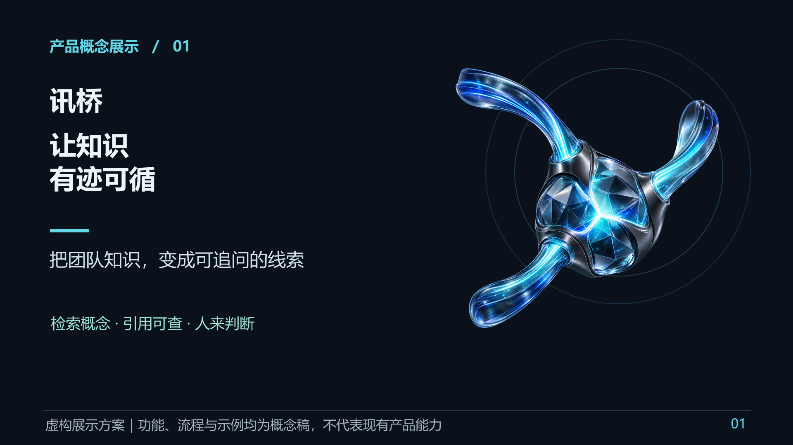
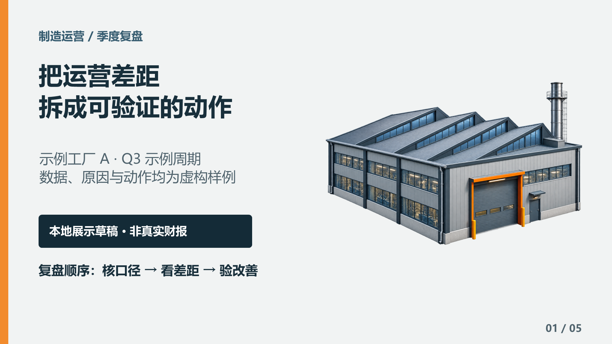
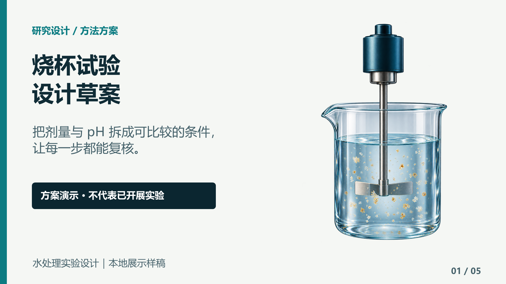
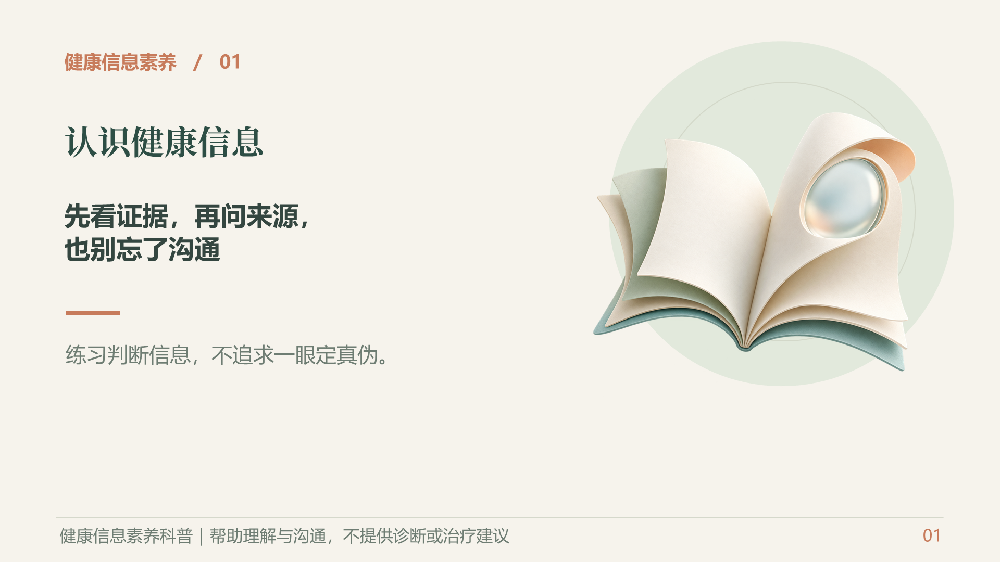
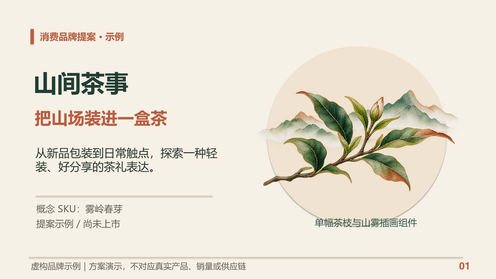
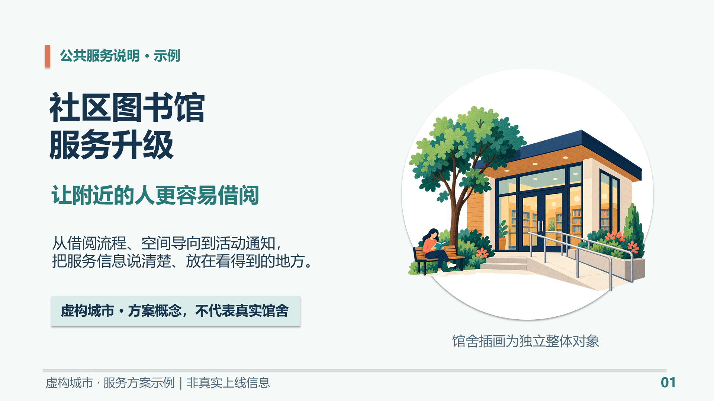

暗色科技 · 讯桥知识检索
科技产品发布
用能力地图、协作流程和发布路线说明产品方案。

这三十页是较早的组装草稿，用户视觉反馈未通过。这里保留实际渲染与原文件；新版完整概念和重建样例请使用上方入口。
用能力地图、协作流程和发布路线说明产品方案。

用示例指标、问题拆解与行动安排辅助经营讨论。

区分实验设计、示意数据和后续验证任务。

帮助公众查看来源、理解证据并准备沟通问题。

用包装、视觉语气和使用触点讲清创意方向。

用服务路径和实施安排向公众说明变化。

用能力地图、协作流程和发布路线说明产品方案。
SHA-256：08efee414fd08d9c961c0830dc29f6cae0922b177a38b8a8dd1955f9913161ba
渲染来源：最终 PPTX / Microsoft PowerPoint / 1920×1080。
用示例指标、问题拆解与行动安排辅助经营讨论。
SHA-256：f549a12a73dd0938524f42de19d5274f12a9ada643d828e3cc62f51a5cd74dcb
渲染来源：最终 PPTX / Microsoft PowerPoint / 1920×1080。
区分实验设计、示意数据和后续验证任务。
SHA-256：aae978a1aae3452ce61f91eee908f0be5f6564d502d869f4aa0e1f334b6cb042
渲染来源：最终 PPTX / Microsoft PowerPoint / 1920×1080。
帮助公众查看来源、理解证据并准备沟通问题。
SHA-256：2d30119ed03c1e0e2da4d5e24b3e77b929bb49242d8d83aa86c031fa25154b2d
渲染来源：最终 PPTX / Microsoft PowerPoint / 1920×1080。
用包装、视觉语气和使用触点讲清创意方向。
SHA-256：5f4d09bda2dcf8a834bd2ed38f778418d86ac0ac872c916604f417d694a3463a
渲染来源：最终 PPTX / Microsoft PowerPoint / 1920×1080。
用服务路径和实施安排向公众说明变化。
SHA-256：346ee1a784c207084f6ed5b11db6f38e9061fa76b0111bbae46ffb40fdcc521f
渲染来源：最终 PPTX / Microsoft PowerPoint / 1920×1080。